Projet personnel - Contrôleur audio physique pour ordinateur
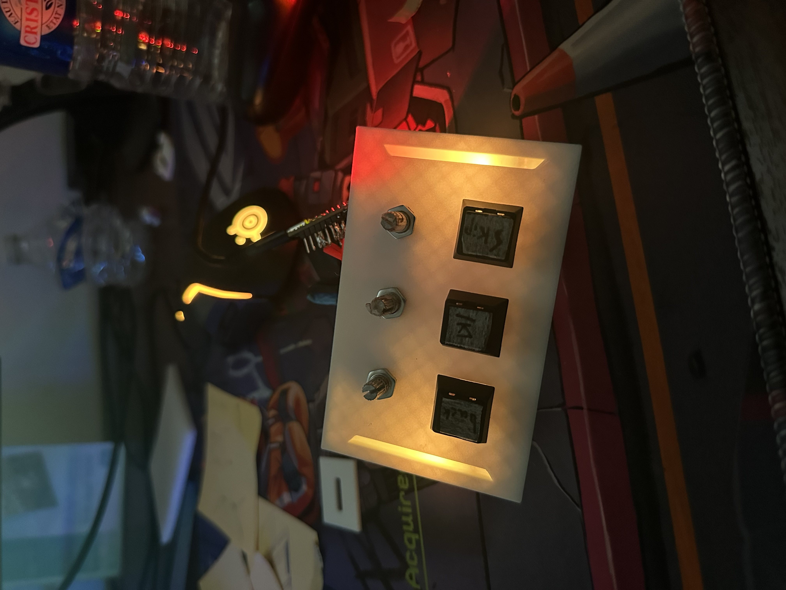
Le contrôleur est fonctionnel (électronique, programme Arduino, configuration deej et boîtier V5 assemblé). Il manque encore la finalisation esthétique du boîtier avec une impression en filament noir, ainsi que les améliorations futures détaillées plus bas.
Ce projet personnel consiste à concevoir et fabriquer un contrôleur audio physique permettant de gérer différentes sources sonores d'un ordinateur à l'aide de potentiomètres et de boutons. L'appareil comprend trois potentiomètres pour régler indépendamment plusieurs volumes du PC, trois boutons physiques dédiés aux commandes multimédias, un système d'éclairage à LED servant de retour visuel, une carte Arduino Pro Micro, un boîtier conçu sur FreeCAD et destiné à être imprimé en 3D, une communication USB avec l'ordinateur, ainsi que le logiciel deej pour agir sur le mélangeur audio de Windows.
L'idée de départ était de pouvoir régler rapidement les différents sons de l'ordinateur sans devoir ouvrir le mélangeur de volume de Windows, utiliser la souris ou quitter l'application en cours. Le contrôleur peut notamment être utilisé pendant un jeu, pendant l'écoute de musique ou lors d'un appel vocal.
Sur un ordinateur, plusieurs applications peuvent produire du son en même temps (musique, jeu, Discord, navigateur...). Le mélangeur de volume de Windows permet de régler ces différentes sources, mais il nécessite généralement plusieurs manipulations : quitter ou réduire l'application en cours, ouvrir le mélangeur, identifier l'application concernée, régler son volume avec la souris, puis revenir à l'application précédente. Le contrôleur remplace ces manipulations par une action physique directe : chaque potentiomètre correspond à une source sonore précise et permet de modifier un volume instantanément, sans interrompre l'activité en cours.
L'objectif principal du projet n'était pas de réaliser immédiatement un produit entièrement finalisé ou commercialisable. Ce projet avait avant tout pour but de tester les capacités de mon matériel, mes connaissances techniques, mes compétences en programmation et en conception mécanique, ma capacité à intégrer différents composants électroniques, ma créativité, ma capacité à résoudre des problèmes et ma démarche d'ingénierie.
Je souhaitais partir d'une idée personnelle et essayer de la transformer progressivement en un objet physique et fonctionnel. La réussite du projet ne repose donc pas uniquement sur le résultat final : elle repose également sur toutes les recherches, les essais, les erreurs, les prototypes et les améliorations réalisés au cours du développement. Chaque version a permis de tester une nouvelle idée ou de corriger une erreur découverte sur la version précédente, et les prototypes imparfaits font entièrement partie du projet.
Le système repose sur un Arduino Pro Micro connecté à l'ordinateur. La carte remplit trois fonctions principales : lire la position des trois potentiomètres, transmettre leurs valeurs à l'ordinateur par le port série, et envoyer des commandes multimédias tout en gérant le retour lumineux.
Le logiciel deej récupère les valeurs envoyées par l'Arduino et les applique au mélangeur audio de Windows. Les boutons, eux, ne passent pas par deej : ils utilisent les capacités USB HID de l'Arduino Pro Micro afin d'être reconnus directement comme des commandes multimédias par l'ordinateur.
Les trois potentiomètres sont connectés aux entrées analogiques de l'Arduino. Chaque entrée renvoie une valeur comprise entre 0 et 1023 :
| Potentiomètre | Entrée Arduino | Fonction actuelle |
|---|---|---|
| Potentiomètre 1 | A0 | Volume général de Windows |
| Potentiomètre 2 | A1 | Volume de Spotify |
| Potentiomètre 3 | A2 | Volume de Discord |
Le programme lit continuellement les trois valeurs puis les transmet à l'ordinateur sous la forme valeur1|valeur2|valeur3 (exemple : 725|412|963), via une communication série configurée à 9600 bauds.
Le fichier de configuration de deej associe chaque potentiomètre à une application :
slider_mapping:
0: master
1: spotify.exe
2: discord.exe
com_port: COM5
baud_rate: 9600
invert_sliders: true
noise_reduction: "default"Le choix des logiciels peut être modifié dans le fichier de configuration : le troisième potentiomètre pourrait par exemple être associé à un jeu en remplaçant discord.exe par le nom de l'exécutable souhaité. Le port série (COM5) dépend de l'ordinateur et devra être adapté si l'Arduino est reconnu sur un autre port. L'option invert_sliders: true permet d'inverser les valeurs reçues afin que le sens de rotation physique des potentiomètres corresponde au comportement souhaité, et la réduction de bruit noise_reduction: "default" limite les petites variations involontaires provoquées par le bruit électrique des potentiomètres.
Le contrôleur comporte trois boutons physiques reliés à l'Arduino :
| Broche Arduino | Commande |
|---|---|
| 6 | Piste précédente |
| 5 | Lecture / Pause |
| 4 | Piste suivante |
Le programme utilise la bibliothèque HID-Project.h, grâce à laquelle l'Arduino Pro Micro est reconnu par l'ordinateur comme un périphérique capable d'envoyer des commandes multimédias : MEDIA_PREVIOUS, MEDIA_PLAY_PAUSE et MEDIA_NEXT. Cette solution permet de contrôler une application multimédia compatible sans devoir développer de logiciel supplémentaire sur l'ordinateur.
Les boutons sont configurés avec les résistances internes de l'Arduino grâce au mode INPUT_PULLUP, et un délai anti-rebond logiciel de 250 ms évite qu'un seul appui physique soit interprété comme plusieurs commandes successives.
Le programme utilise deux LED RGB adressables (bibliothèque Adafruit_NeoPixel.h), une de chaque côté du contrôleur (broches 8 et 9), avec une luminosité limitée à 60 sur 255 pour rester visible sans être agressive.
Lorsque le contrôleur n'est pas utilisé, les LED affichent une animation arc-en-ciel d'environ 6 secondes par cycle : les deux LED affichent simultanément la même couleur et parcourent progressivement la roue chromatique, indiquant que le contrôleur est alimenté et actif.
Chaque bouton déclenche un flash lumineux spécifique d'environ 150 ms, avant que l'animation arc-en-ciel ne reprenne automatiquement :
Le programme compare continuellement la valeur actuelle de chaque potentiomètre avec sa dernière valeur enregistrée. Un mouvement est détecté lorsque la variation dépasse 8 unités analogiques, ce qui évite que les petites fluctuations électriques provoquent constamment un changement de couleur. Lorsqu'un mouvement est détecté, les deux LED affichent une couleur allant progressivement du vert (valeur faible) vers le rouge (valeur élevée).
Dans la version actuelle du programme, cette couleur est toujours calculée à partir de la valeur du potentiomètre général (A0), même lorsque le potentiomètre Spotify ou Discord est manipulé : il s'agit d'une limite connue du programme, qu'une amélioration future pourrait corriger en utilisant la valeur du potentiomètre réellement déplacé.
Le boîtier a été conçu avec FreeCAD. La façade devait accueillir trois boutons, trois potentiomètres, les zones lumineuses, la connectique et les différents systèmes de fixation. La conception a nécessité plusieurs prototypes, car les dimensions théoriques des composants ne suffisent pas toujours pour obtenir un assemblage correct après impression : le résultat dépend aussi des tolérances de l'imprimante, du matériau utilisé, de l'épaisseur des parois, du jeu laissé autour des ouvertures, de l'orientation d'impression et du comportement des clips des switches.
Pour éviter de réimprimer une façade complète après chaque modification, plusieurs petites plaques d'essai ont été conçues. L'évolution du projet, de la maquette en carton jusqu'au boîtier final, illustre cette démarche d'amélioration itérative :
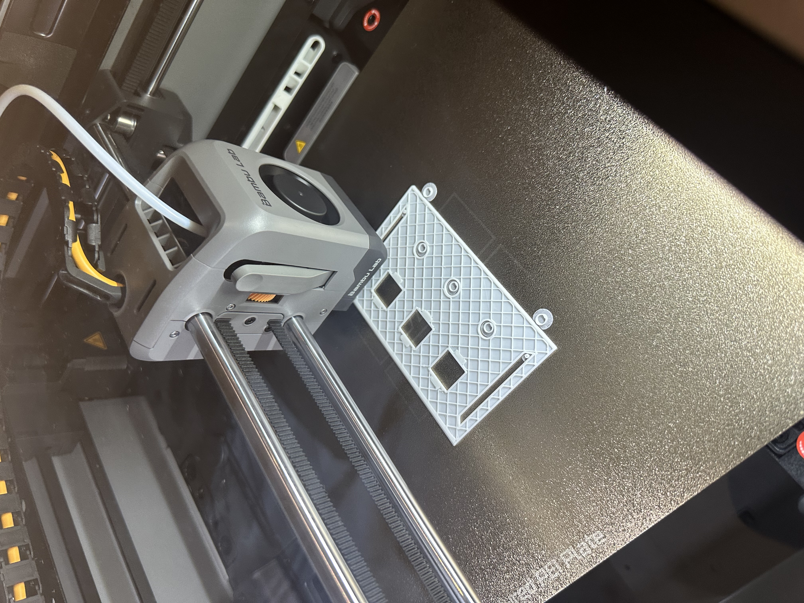
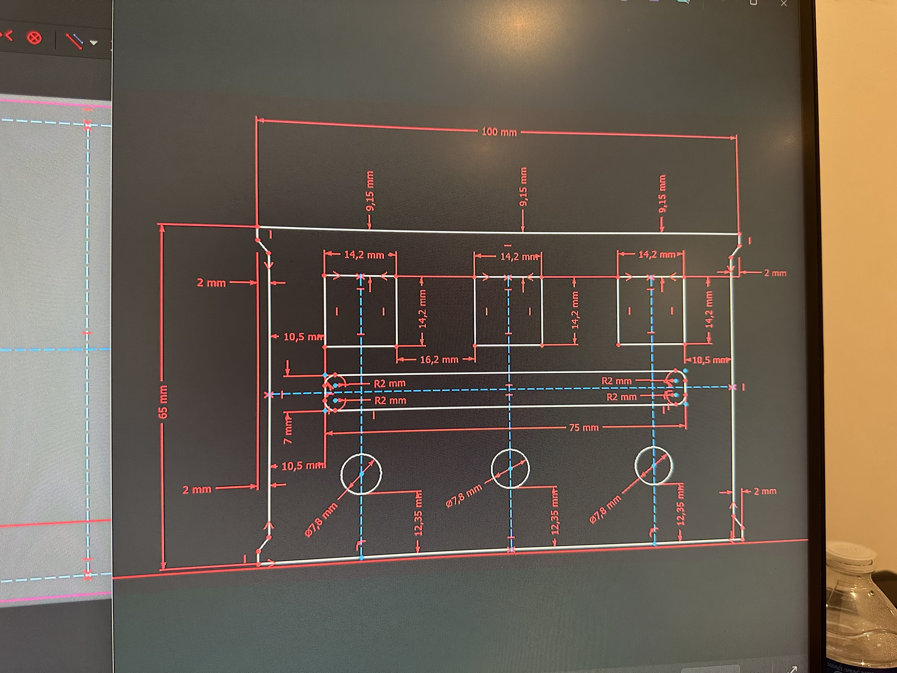
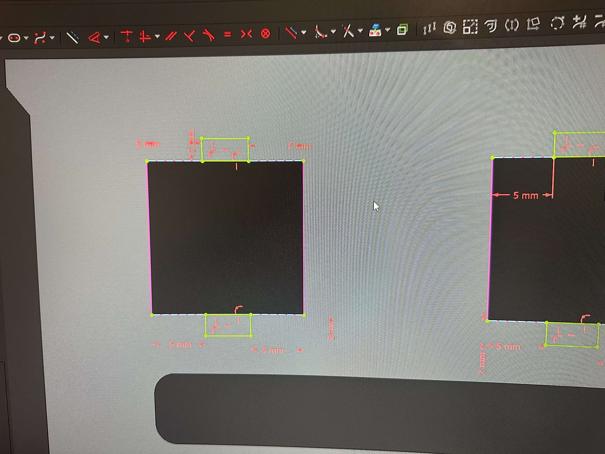
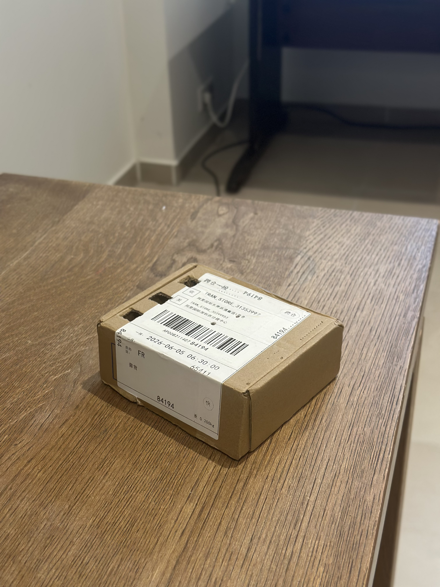
Première version fabriquée en carton, destinée à donner rapidement une forme physique au projet : organisation des commandes, position des boutons et des potentiomètres, proportions générales, accessibilité et aspect global. Elle a permis de donner vie au concept et de préparer la première modélisation 3D, mais ne validait ni les dimensions exactes, ni la fixation des composants, ni la solidité du boîtier.
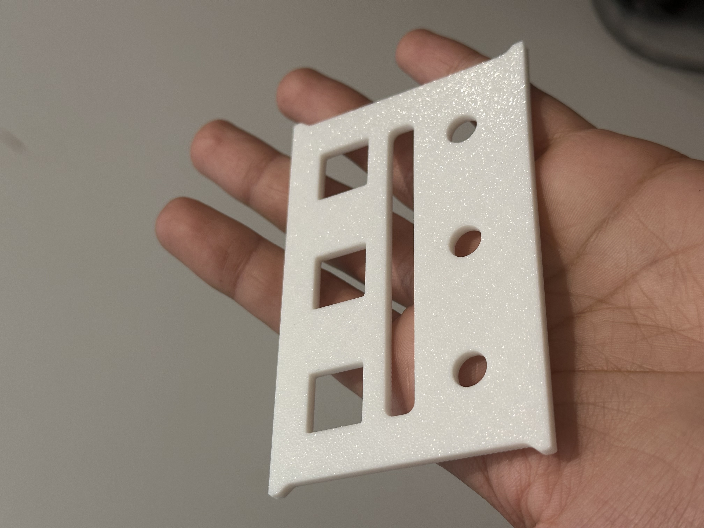
Première véritable façade conçue pour l'impression 3D : trois emplacements carrés pour les boutons en partie haute, une barre LED horizontale au centre, et trois emplacements circulaires pour les potentiomètres en partie basse. Cette version a défini l'identité visuelle et l'organisation générale du contrôleur.
ProblèmeLes dimensions exactes nécessaires pour insérer et fixer les composants n'étaient pas encore connues : les fiches techniques ne correspondent pas toujours à la taille à dessiner dans FreeCAD, et une ouverture peut devenir trop petite ou trop grande après impression. Réimprimer toute la façade pour quelques dixièmes de millimètre aurait été peu efficace, d'où la création de plaques d'essai en V2.1.
Petites plaques imprimées séparément, contenant une ouverture pour tester individuellement un switch, un potentiomètre, un connecteur ou un autre composant, avant de modifier la façade complète.
Objectifs : vérifier la facilité d'insertion, la présence de jeu, la tenue mécanique, la possibilité de retirer le composant, les dimensions réellement obtenues après impression et les tolérances à ajouter au modèle.
BénéficeCette démarche a permis de réduire le temps d'impression, la consommation de filament, le nombre de façades inutilisables et le coût des erreurs. Au lieu de modifier directement une pièce complexe, chaque problème était isolé et testé sur une pièce simple.
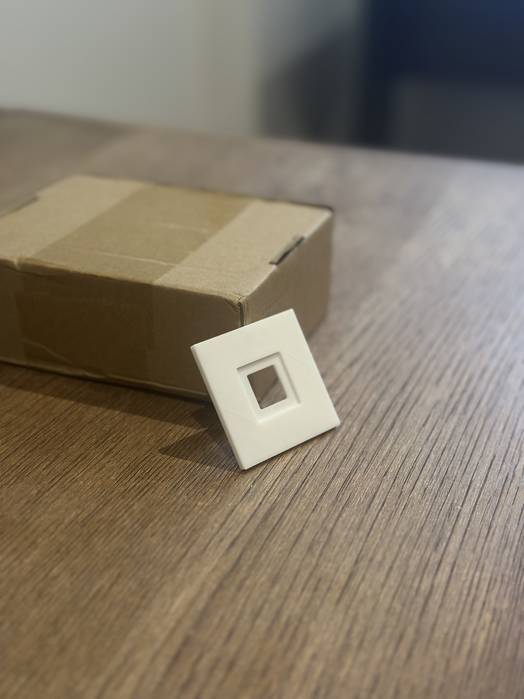
Plaque dédiée à la fixation des switches des boutons : ouverture carrée pour le corps du switch, avec une zone creusée à l'arrière sur l'ensemble du carré pour réduire localement l'épaisseur et permettre aux clips du switch de s'accrocher. Le système facilitait bien le clipsage.
Erreur identifiéeLe retrait de matière autour des quatre côtés du carré fragilisait la plaque : la zone devenait plus fine, moins rigide, plus sensible à la flexion et plus susceptible de casser pendant l'insertion ou le retrait du switch. Le système fonctionnait, mais la quantité de matière retirée était trop importante.
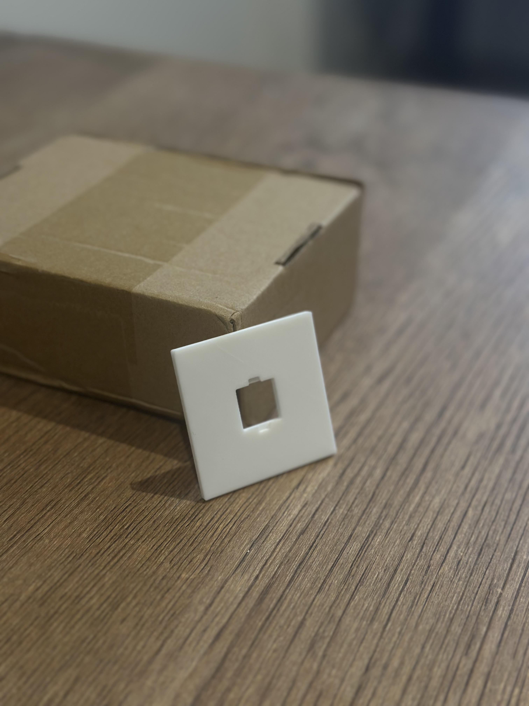
Reprend le principe de la V2.2, mais la réduction d'épaisseur n'est plus réalisée sur la totalité du carré : elle est uniquement conservée en haut et en bas, dans les zones réellement nécessaires au fonctionnement des clips. Les côtés conservent davantage de matière.
CorrectionCette modification conserve le clipsage du switch tout en augmentant la rigidité de la plaque, en limitant la flexion et en réduisant le risque de casse. Cette version illustre l'intérêt des plaques d'essai : l'erreur de la V2.2 a pu être observée et corrigée avant d'être reproduite sur la façade complète.
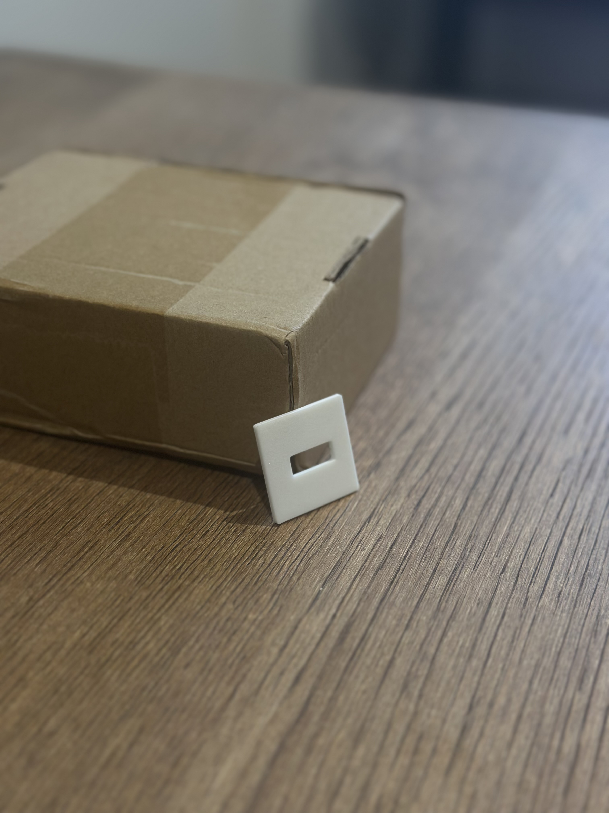
Plaque destinée à tester l'intégration de la connectique USB-C : dimensions de l'ouverture, passage et centrage du connecteur, accessibilité depuis l'extérieur, espace autour du câble et intégration dans l'épaisseur de la pièce. Comme pour les switches, le connecteur a été testé séparément avant d'être intégré à la conception générale, évitant ainsi de découvrir une erreur de positionnement après l'impression de la base complète.
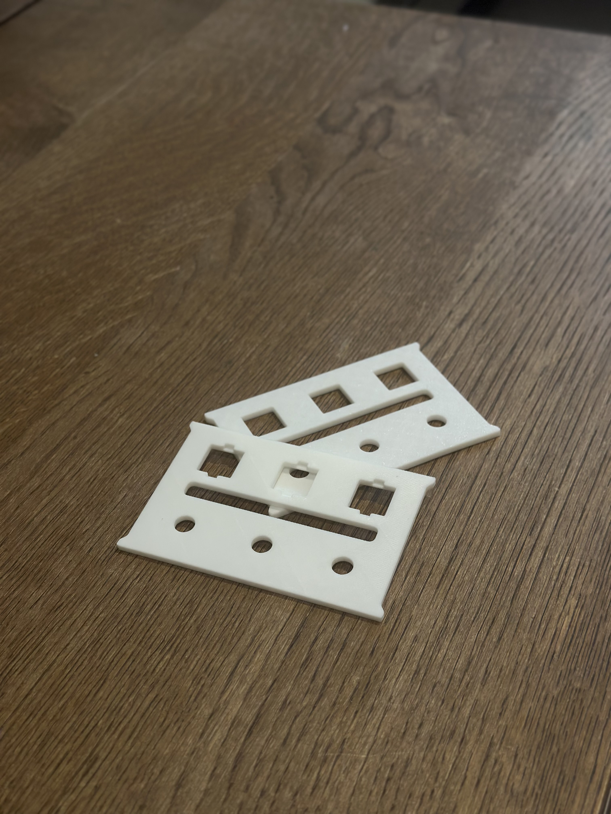
Nouvelle version de la façade intégrant les résultats des différentes plaques d'essai : ouvertures ajustées selon les dimensions réellement obtenues après impression, les tolérances nécessaires, les tests des switches et des potentiomètres, l'intégration de la connectique et les besoins de solidité. Cette façade était plus réaliste et plus proche d'une version assemblable que la V2, mais restait centrée sur la façade seule : la forme générale, le volume intérieur et la stabilité du boîtier complet n'étaient pas encore validés.
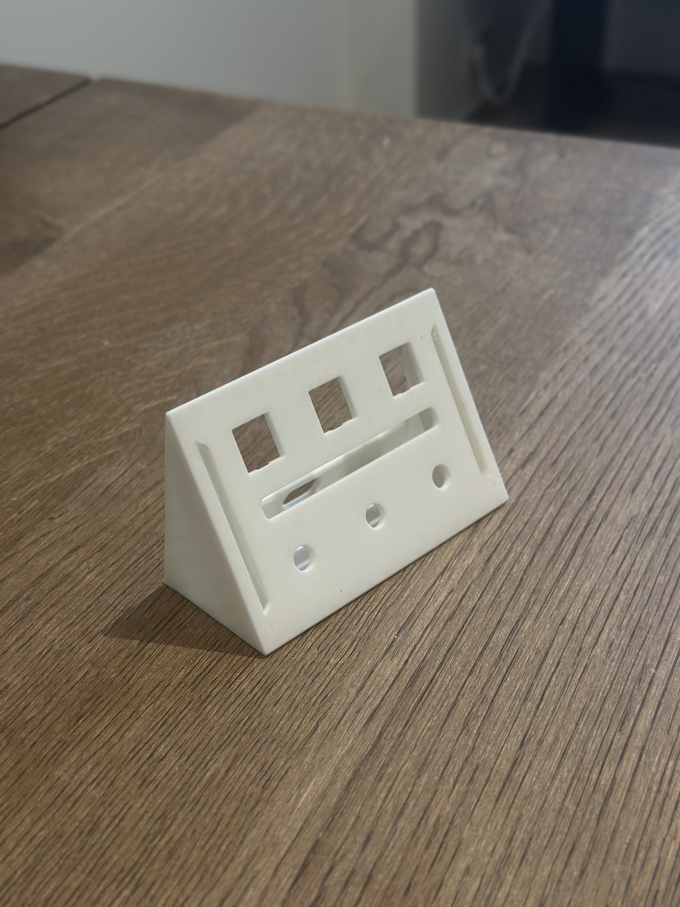
À partir de cette version, la conception ne concernait plus uniquement la façade mais une base complète : façade inclinée, dessous du boîtier, côtés, volume intérieur, espace pour l'électronique et intégration de la connectique. Cette version a permis de tester pour la première fois la forme générale et l'ergonomie réelle du contrôleur.
Erreur principaleLa base était trop haute par rapport à sa longueur et à sa profondeur : à la moindre pression sur un bouton ou sur la partie supérieure de la façade, le boîtier avait tendance à tomber vers l'arrière. Cette erreur provenait d'une hauteur trop importante, d'une profondeur insuffisante, d'un centre de gravité trop reculé, d'un effet de levier important lors de l'appui sur les boutons et d'une inclinaison pas encore adaptée. Cette version a montré qu'un modèle peut sembler visuellement correct dans FreeCAD tout en étant peu stable à l'usage réel : le problème n'a pu être identifié qu'en testant physiquement le boîtier.
L'inclinaison et les proportions du boîtier ont été revues pour obtenir un ensemble moins haut, plus stable, mieux proportionné et moins susceptible de basculer vers l'arrière, tout en conservant une façade suffisamment inclinée pour rendre les commandes visibles et accessibles sur un bureau. La nouvelle géométrie réduit l'effet de levier provoqué par l'appui sur les boutons.
La barre LED horizontale des premières versions a été supprimée pour simplifier la façade, réduire la taille des grandes découpes, conserver davantage de matière et améliorer la rigidité. Des espaces ont été ajoutés sur les bordures gauche et droite de la façade pour recevoir les LED : l'éclairage est désormais placé sur les côtés du contrôleur plutôt que dans une longue barre centrale, ce qui encadre visuellement la façade, libère la zone centrale, limite la fragilisation de la pièce et correspond au programme utilisant deux LED séparées.
RésultatVersion actuelle du projet, fonctionnelle et assemblée.
Lors de la création des perçages de la façade, plusieurs formes avaient été regroupées dans une seule esquisse : les trois trous des boutons, les trois trous des potentiomètres, les ouvertures liées à l'éclairage et les longues découpes placées sur les côtés. Une opération de cavité traversante de 3 mm a ensuite été appliquée à l'ensemble de cette esquisse.
Dans l'aperçu, FreeCAD semblait supprimer presque tout le boîtier, alors que les contours rouges représentant les découpes apparaissaient correctement. La cause identifiée : les longues découpes latérales longeaient presque toute la hauteur de la façade et, en traversant totalement l'épaisseur, elles séparaient la façade du reste du boîtier en plusieurs volumes indépendants — or, dans Part Design, un corps doit normalement rester constitué d'un seul solide continu.
La correction retenue a consisté à séparer les différentes découpes selon leur fonction : une esquisse pour les véritables perçages traversants, une autre pour les logements des LED, une opération distincte pour les zones qui ne doivent pas traverser toute l'épaisseur, et des profondeurs de cavité différentes selon le besoin. Cette erreur a permis de comprendre qu'il n'est pas toujours pertinent de regrouper toutes les ouvertures dans une seule esquisse.
Une dimension correcte dans FreeCAD ne garantit pas automatiquement un assemblage correct après impression. Il a fallu prendre en compte les écarts de l'imprimante, le jeu nécessaire autour des composants, la précision réelle des switches et des potentiomètres, la déformation possible du plastique et l'épaisseur des parois. Les plaques d'essai ont permis de résoudre progressivement cette difficulté.
La façade devait être suffisamment fine pour permettre aux clips des switches de s'accrocher, mais suffisamment épaisse pour rester solide. La V2.2 retirait trop de matière ; la V2.3 a amélioré le système en limitant les évidements aux zones nécessaires.
Les ouvertures nombreuses et proches les unes des autres peuvent fragiliser une pièce imprimée. Il a fallu trouver un équilibre entre esthétique, accessibilité des composants, facilité d'assemblage, quantité de matière et résistance mécanique.
La V4 a montré qu'une hauteur trop importante par rapport à la profondeur provoquait un basculement vers l'arrière. La V5 corrige ce problème grâce à une nouvelle inclinaison et à des proportions mieux adaptées.
Les valeurs analogiques peuvent varier légèrement même lorsque les potentiomètres ne sont pas manipulés. Deux solutions sont utilisées : un seuil de détection de 8 dans le programme Arduino, et le réglage noise_reduction: "default" dans deej.
Le port COM5 indiqué dans le fichier YAML correspond à l'ordinateur de développement. Il peut être nécessaire de le modifier lors de l'utilisation du contrôleur sur un autre ordinateur ou après un changement de port USB.
Le projet remplit son objectif expérimental, mais plusieurs évolutions restent possibles :
Le programme envoie actuellement les trois valeurs analogiques en continu, environ toutes les 10 ms. Une future version pourrait n'envoyer les valeurs que lorsqu'un changement significatif est détecté, afin de réduire les transmissions inutiles.
J'ai apprécié de partir d'une idée personnelle et de la transformer progressivement en un objet physique et fonctionnel, en mêlant programmation, électronique, conception mécanique et prototypage. La progression entre la V1 et la V5 montre une véritable démarche d'amélioration continue, où chaque prototype imparfait a permis de tester une idée ou de corriger une erreur découverte sur la version précédente.
Les principales difficultés ont porté sur les tolérances d'impression 3D, la fixation des switches, la solidité de la façade et la stabilité du boîtier. Ces erreurs (comme le basculement de la V4 ou la fragilité de la V2.2) font entièrement partie du projet : elles m'ont permis de démontrer ma capacité à analyser un défaut, à en rechercher la cause et à proposer une amélioration adaptée.
Ce projet m'a permis de mettre en pratique des compétences en programmation embarquée, communication série, USB HID, électronique, conception CAO avec FreeCAD et impression 3D, tout en développant ma créativité et ma démarche d'ingénierie face à des contraintes de fabrication réelles.
Le contrôleur SoundPilot dans sa version V5, assemblé et fonctionnel au quotidien.
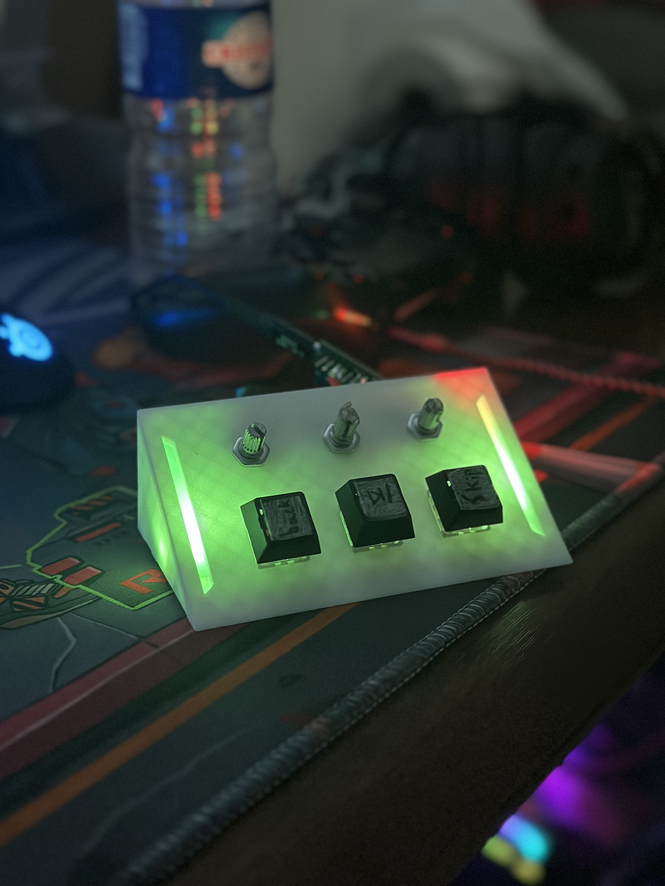
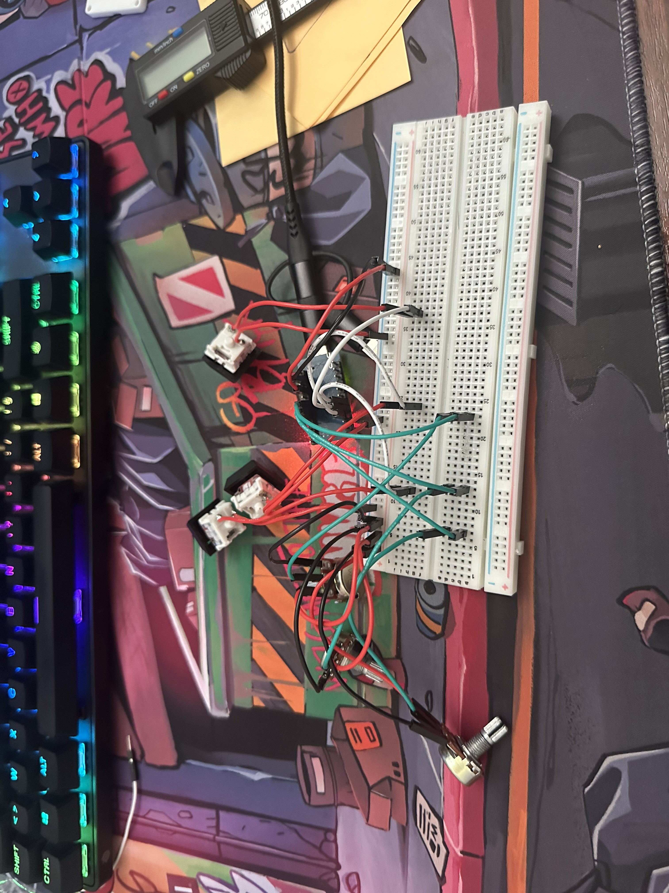
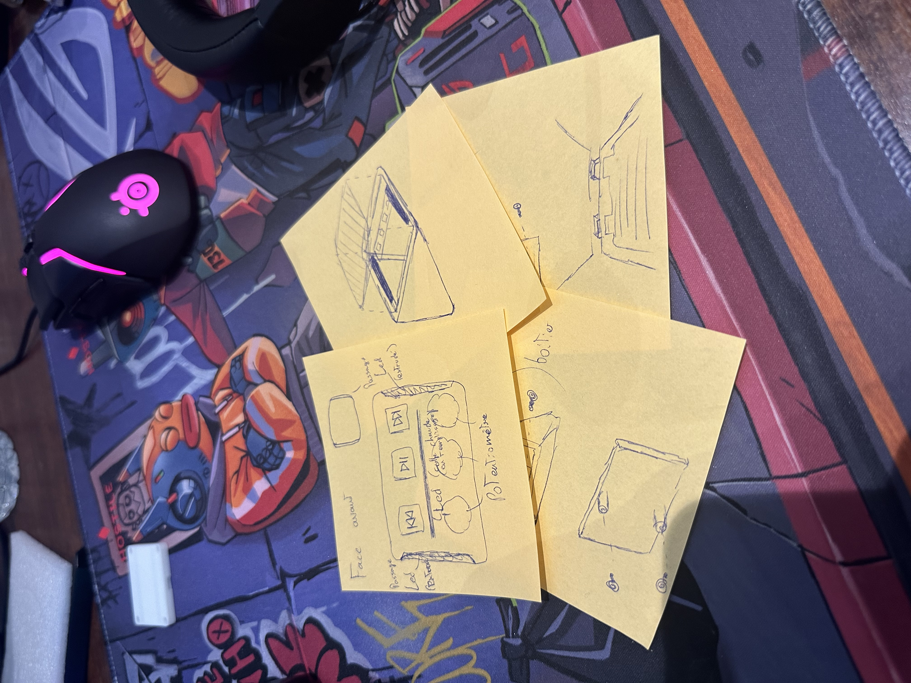